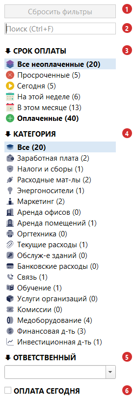
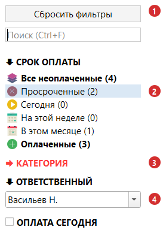
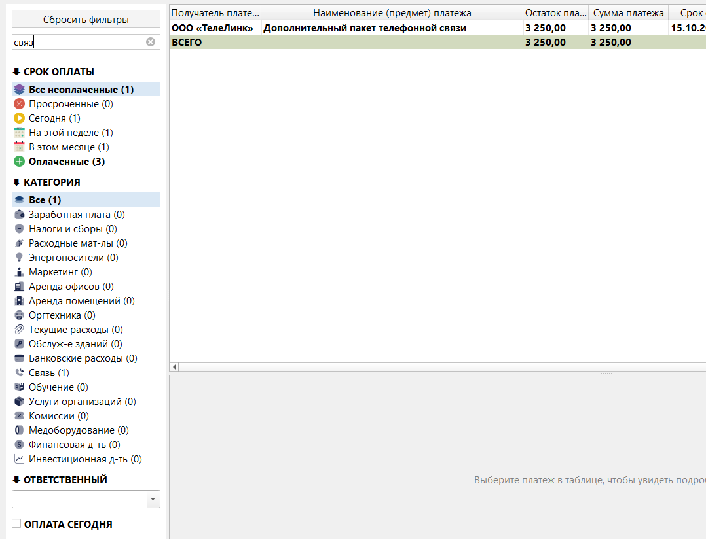

Раздел 5. Фильтры и поиск |
Фильтры боковой панели и поиск оставляют в таблице только подходящие платежи; ничего не удаляется и не меняется.
Общие правила |
Боковая панель |

Рис. 14. Боковая панель после запуска. 1 — кнопка «Сбросить фильтры»; 2 — строка поиска; 3 — СРОК ОПЛАТЫ; 4 — КАТЕГОРИЯ; 5 — ОТВЕТСТВЕННЫЙ; 6 — ОПЛАТА СЕГОДНЯ.
«На этой неделе» — от сегодня до воскресенья включительно, «В этом месяце» — до конца месяца; просроченные платежи в них не входят. Пункты пересекаются: платеж со сроком сегодня попадёт в «Сегодня», «На этой неделе» и «В этом месяце»; в воскресенье «На этой неделе» совпадает с «Сегодня».
|
💡 Совет. Всё, что нужно оплатить в ближайшее время, — «В этом месяце» плюс «Просроченные». |
«Оплаченные» показывает только недавно оплаченные платежи. Срок: «Настройки» → «Таблица» → «Оплаченные платежи» → «Отображать оплаченные платежи за» — «три месяца» (по умолчанию), «полгода», «один год» или «все время». Отсчёт — от даты последней оплаты, а не от срока платежа. Платеж, оплаченный полностью сегодня, в «Оплаченные» попадёт только завтра (раздел 2).
Платежи финансовой деятельности показываются все вместе, независимо от подкатегории. Пункта для раздела «Текущая деятельность» целиком нет: оставьте «Все».
В списке все сотрудники, в том числе из архива. Снять фильтр — крестик в поле или пустая строка в начале списка.
Флажок «ОПЛАТА СЕГОДНЯ» оставляет платежи, по которым сегодняшним числом внесена оплата (столбец «Оплата сегодня», раздел 2).
С пунктом «Оплаченные» флажок даёт пустую таблицу: платеж с оплатой за сегодня до конца дня считается неоплаченным.
Число в скобках — сколько платежей окажется в таблице при выборе этого пункта с учётом остальных условий (поиск, ответственный, «ОПЛАТА СЕГОДНЯ», «На контроле», выбранный пункт другой группы). Поэтому при поиске числа уменьшаются.
Группу можно свернуть по названию. Свёрнутая группа продолжает работать; если в ней включён фильтр, название красное. Свёрнутость запоминается.

Рис. 15. Включены фильтры: срок «Просроченные» (2), категория «Медоборудование» (группа свёрнута и подсвечена красным) и ответственный «Васильев Н.». 1 — «Сбросить фильтры» доступна; 2 — срок оплаты; 3 — свёрнутая группа с фильтром; 4 — ответственный.
Пункт «На контроле» |
Пункт «На контроле» в меню «Вид» оставляет только платежи с жёлтой звёздочкой (раздел 2) и работает вместе с остальными фильтрами.
Поиск |
Поле поиска в боковой панели; быстрый переход — Ctrl+F. Esc очищает поиск, Enter или ↓ переводят курсор в таблицу, оставляя найденное.

Рис. 16. Поиск «связ»: в таблице остался один платеж (с итоговой строкой), а числа в боковой панели пересчитались.
Сброс фильтров |
«Сбросить фильтры» (Ctrl+R) возвращает состояние после запуска:
Что сброс не меняет: пункты «Заголовки разделов» и «Итого по разделам» в меню «Вид» и то, какие группы свёрнуты.
Кнопка недоступна, пока нет включённых фильтров и поиска («Все неоплаченные» и «Все» не считаются).
Если что-то пошло не так |
| Что вы видите | Что случилось | Что делать |
|---|---|---|
| Платежа нет в таблице, хотя вы его вносили | Он оплачен, а по умолчанию показаны только неоплаченные. Либо оплачен давно и вышел за срок показа оплаченных | Выберите «Оплаченные». Если платеж оплачен давно, увеличьте срок в «Настройки» → «Таблица» → «Оплаченные платежи» |
| Поиск ничего не находит, хотя платеж есть | Поиск работает среди платежей, прошедших фильтры. Либо вы ищете текст из заметок, а поиск их не просматривает, либо слова введены не в том порядке (ищется фраза целиком) | «Сбросить фильтры» и поиск по меньшему числу слов. Заметки поиском не найти |
| Просроченные платежи не красные | Включён пункт «Просроченные» или флажок «ОПЛАТА СЕГОДНЯ»: подсветка в этих режимах отключена | Это нормально (раздел 2) |
| Числа в боковой панели не совпадают с числом строк в таблице | Заголовки и итоги не считаются платежами; число у пункта — для случая, когда выбран именно этот пункт | Сравнивайте с числом платежей, а не строк |
| Таблица пуста, видна надпись «Нет платежей, подходящих под условия фильтрации и поиска» | Условия оставили ноль платежей | Нажмите «Сбросить фильтры» |
| Платеж пропал после того, как вы сняли звёздочку | Включён пункт «На контроле» в меню «Вид» | Выключите пункт «На контроле» |
| Сообщение «Выбранный платеж больше не отображается в таблице - вероятно, изменились условия фильтрации. Выберите платеж заново.» | Платеж скрыт фильтром или поиском | Сбросьте фильтры (Ctrl+R) или выберите платеж заново (раздел 2) |
| Кнопка «Сбросить фильтры» серая | Ни один фильтр не включён | Ничего делать не нужно |